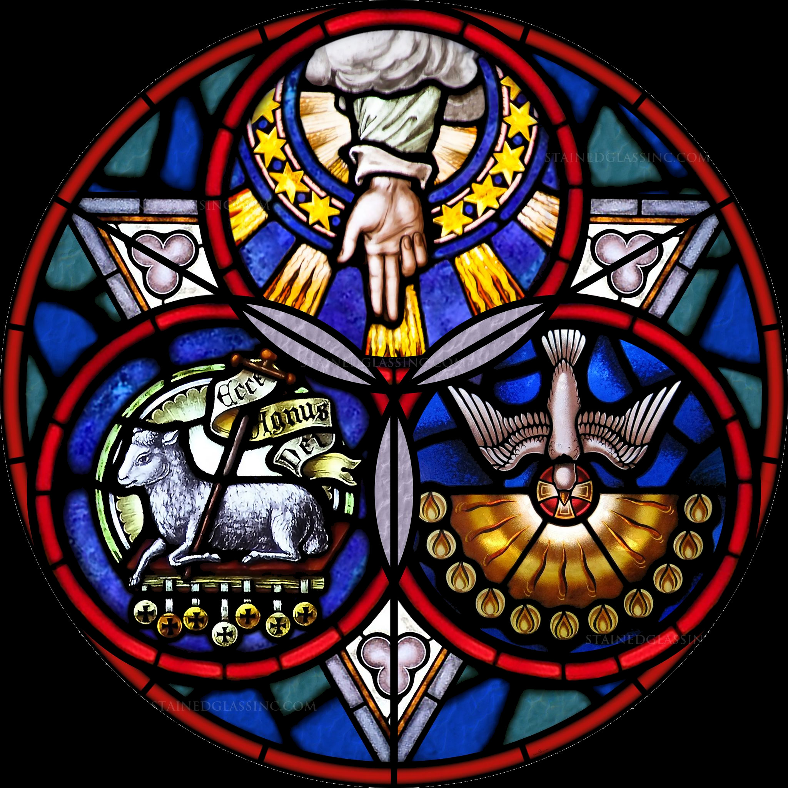

Voor de bevording van Bijbels Christendom in het Avondland
Literatuur
Onderstaande lijst bevat een selectie van aanbevolen boeken; deze is echter nog verre van volledig en wordt momenteel verder aangevuld.
Van essentieel belang:
Staten Vertaling met kanttekeningen, formulieren en Psalmen. Gereformeerde Bijbel Stichting.
De Augsburgse Belijdenis
Dogmatiek
Berkhof, Louis. Systematic Theology
Bavinck, Herman. Magnalia Dei
Kersten, G. H. Gereformeerde Dogmatiek
Calvijn, Johannes. Institutie *Alleen aan te raden als je speciale interesse hebt in de theologie van de reformatie
Polemiek
The Magdeburg Confession
Luther, Martin. Over de Joden en hun leugens
Tertullian. The apparel of women
Dagelijkse overdenkingen
Gerhard, Johann. Sacred Meditations
Bunyan, John. De christenreis naar de eeuwigheid
Politiek
Aristoteles. Politika
Overig
De apostolische vaders
De Didachè *De Didachè en de apostolische vaders zijn essentieel voor het begrijpen van de vroege kerk

Eer aan de Drieheid in de Eenheid, en aan de Eenheid in de Drieheid.